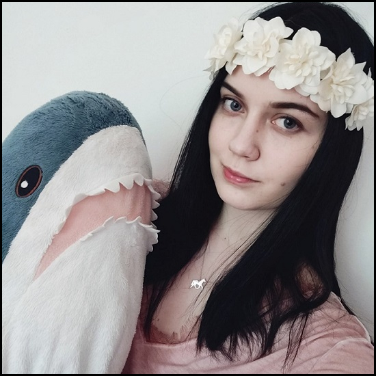
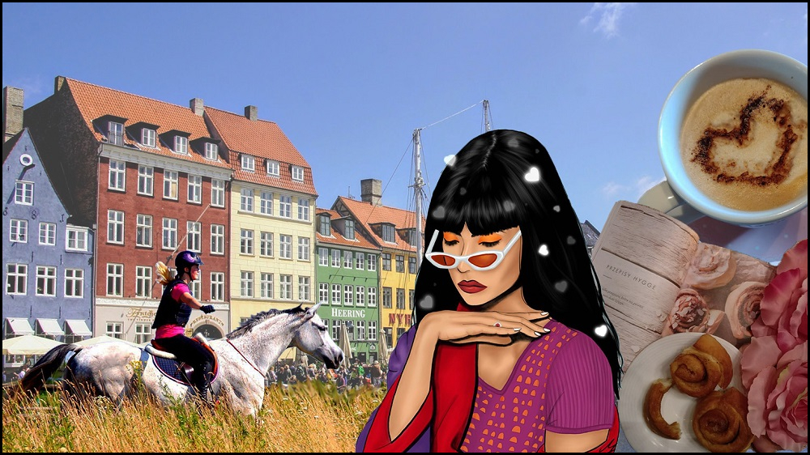

multimedia design
portfolio

about me
I'm a 20-year-old Polish girl interested in design, music and animals. I am currently living in Denmark and studying Multimedia Design and Communication at Copenhagen School of Design and Technology. Even though Poland is my home country, my heart belongs to Denmark – that’s why I decided to move abroad and continue my education there.

Even though my interests are all different, I wouldn't be who I am without them. Listening to music inspires me and calms me down, drawing lets me make a full use of my creativity... Everything plays its part. I believe that this collage is a perfect representation of me and what interests me the most. It's made out of photos I took, it also includes one of my digital drawings (which I'm very proud of!).
